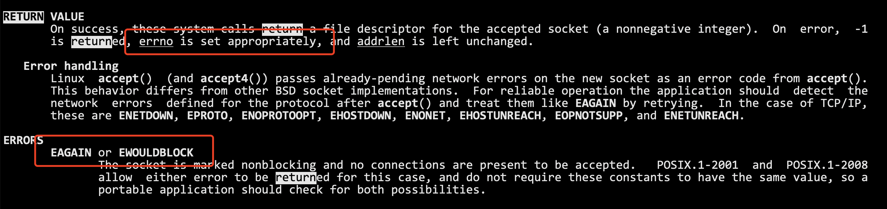
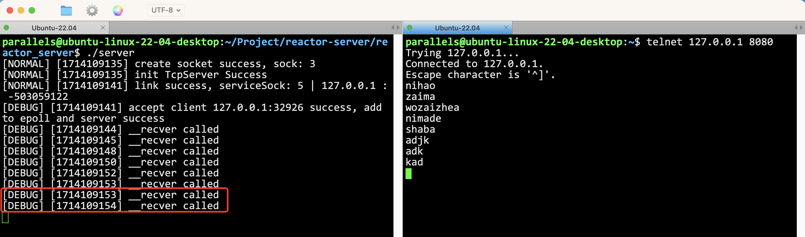
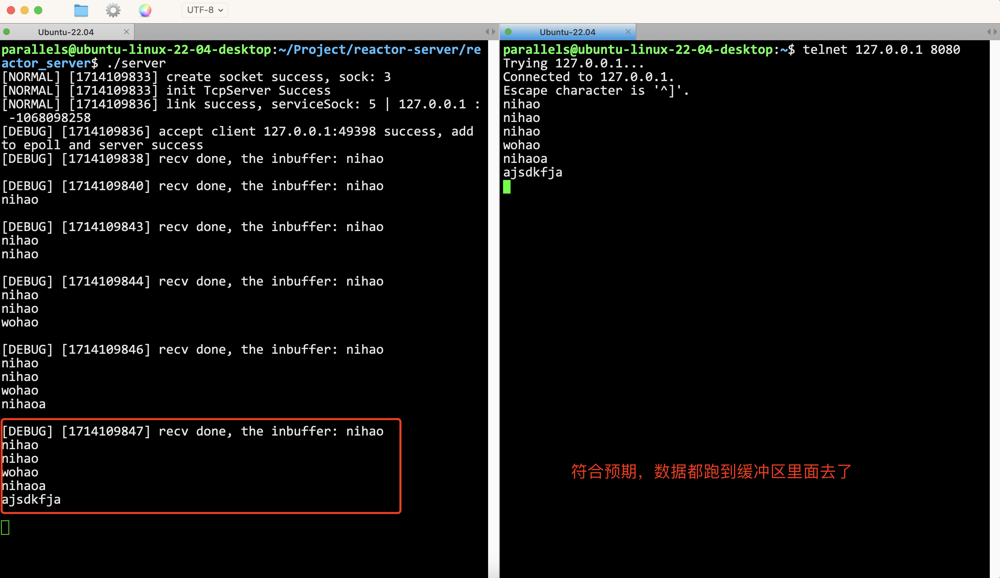

这一部分不多说，直接进入代码编写，后面有需要解释的特性，再解释。
tcp_server.hpp
class tcp_server {private:public:};我们好好的看一下这一份代码。
void epoll_recver(int sock) { // 读取这个普通套接字里面的内容 // 1. 读取数据 // 2. 处理数据 char buffer[10240]; size_t n = recv(sock, buffer, sizeof(buffer) - 1, 0); if (n > 0) { // 假设这里就是读到了一个完整的报文 buffer[n] = 0; __handler_request(buffer); // 进行回调！ } else if (n <= 0) { // 对端关闭文件描述符 // 让epoll不再关注这个文件描述符 // 一定要先从epoll中去掉，才能close文件描述符 bool res = __epoll::control_epoll(__epoll_fd, EPOLL_CTL_DEL, sock, 0); assert(res); // 保证是成功的，因为一般来说都是成功的，所以直接assert (void)res; close(sock); if (n == 0) logMessage(NORMAL, "client %d quit, me quit too ...", sock); else if (n < 0) logMessage(NORMAL, "client recv %d error, close error sock", sock); } }调用recv的时候读取的是完整的报文吗？不知道，所以我们buffer[10240]里面的也是不完整的报文。
此时能够直接交付给__handler_request()做我们的业务逻辑吗？不可以！这样是错的！
但是，我们上节课写的epoll服务器，也没有对应的缓冲区让我们暂时存放，等报文完整才__handler_request()，所以，上面的epoll_recver是错误的。
而且，一个epoll_server可能有成百上千的sock，每一个sock，都需要缓冲区才行！
所以要维护！
tcp_server.hpp
class connection {public: using func_t = std::function<void(connection*)>;
public: connection(); ~connection();
public: int __sock; // io的文件描述符 func_t __recv_callback; func_t __send_callback; func_t __except_callback; std::string __in_buffer; // 输入缓冲区（暂时没有处理二进制流） std::string __out_buffer; // 输出缓冲区 tcp_server* tsvr; // 回指指针};每一个文件描述符，都要封装！因为每一个文件描述符，都有可能有三种时间，读事件，写事件，异常事件。
简单来说就是，我们通过封装func_t，后面这个sock需要读的时候，就去调用__recv_callback。后面的同理！
这三个函数对象，都要从用户层传过来！
当然，输入输出缓冲区也是需要的！目前的用string做缓冲区，暂时没有办法处理二进制流，但是文本是可以的。
tcp_server* tsvr;这个指针也很好理解，毕竟我这个connector总要知道是哪个服务器在调用我吧。
然后初始化什么的这里就不说了，看代码就行。然后我也写了一个void set_callback(func_t recv_cb, func_t send_cb, func_t except_cb)来设置这个sock封装(connector)的回调。
这次封装和上次就不同了，这次我们把epoll的所有动作都封装到epoll.hpp里面去，包括epollfd什么的，我们的tcp_server就不管这个epoll里面的事情了，tcp_server只负责调用接口！
class tcp_server {public: const static int gport = 8080;private: int __listen_sock; int __port; __epoll __poll; // 这里直接维护一个epoll然后，其实在很多真正的开发场景中，多路转接的方法都是可以选的，一般就是写一个虚基类class poll {}，里面的函数就是纯虚的，然后去继承epoll, select, poll 这些。
所以对于tcp_server, 我们多路转接都叫poll比较好，因为也不一定要用epoll。
tcp_server(int port = gport) : __port(gport) { // 1. 创建listensock __listen_sock = Sock::Socket(); Sock::Bind(__listen_sock, __port); Sock::Listen(__listen_sock); // 2. 创建多路转接对象 __poll.create_poll(); // 3. 封装listensock, 因为以后在tcpserver里面，已经不会再有裸露的sock了，都是要封装的 connection* conn = new connection(__listen_sock); conn->set_callback(read_callback, nullptr, nullptr); conn->__tsvr = this; // 让conn对象指向自己
}这里需要理解一下！首先，我们知道，有两种sock，一种是listensock，一种是其他sock。
但是对于listensock来说，他只需要关注读事件啊！因此，conn->set_callback(read_callback, nullptr, nullptr);。
因为处理监听套接字，未来我们会存在大量的socket，每一个sock都必须被封装成一个connction。 当服务器中存在大量的connection的时候，tcp_server就需要将所有的connection进行管理！
那就用一个哈希表来存！
std::unordered_map<int, connection*> __connection_map;文件描述符是唯一的，所以O(1)直接找到对应的connection！
所以我们不仅要将sock添加到poll中，还要将sock加到映射表中去！
未来，poll会告诉我哪个sock就绪了，然后我就可以通过这个sock立刻找到对应的connection对象，然后缓冲区，回调，都有了！这句话很重要！ 未来，poll会告诉我哪个sock就绪了，然后我就可以通过这个sock立刻找到对应的connection对象，然后缓冲区，回调，都有了！这句话很重要！ 未来，poll会告诉我哪个sock就绪了，然后我就可以通过这个sock立刻找到对应的connection对象，然后缓冲区，回调，都有了！这句话很重要！
什么意思呢？ 加入到服务中有三件事：
封装成connection
加入到poll中
加入到connection的哈希表中
void __add_connection(int sock, func_t recv_cb, func_t send_cb, func_t except_cb) { // 不同种类的套接字都可以调用这个方法 // 1. 构建conn对象，封装sock connection* conn = new connection(sock); conn->set_callback(recv_cb, send_cb, except_cb); conn->__tsvr = this; // 让conn对象指向自己 // 2. 添加sock到poll中 __poll. // 3. 把封装好的conn放到map里面去 __connection_map.insert({ sock, conn }); }所以我们需要在poll里面添加一个方法，把sock添加到epoll中，这个很简单，写epoll的时候已经写过了。
poll.hpp
xxxxxxxxxxclass __epoll {private: int __epoll_fd;
public: const static int gnum = 128;
public: __epoll() { } ~__epoll() { }
public: void create_poll() { __epoll_fd = epoll_create(gnum); if (__epoll_fd < 0) exit(5); } bool add_sock_to_poll(int sock, uint32_t events) { struct epoll_event ev; ev.events = events; ev.data.fd = sock; int n = epoll_ctl(__epoll_fd, EPOLL_CTL_ADD, sock, &ev); return n == 0; }
public:};任何多路转接的服务器，一般默认只会打开对读取时间的关心，写入事件回按需进行打开。
所以，这里要这么写
xxxxxxxxxx void __add_connection(int sock, func_t recv_cb, func_t send_cb, func_t except_cb) { // 不同种类的套接字都可以调用这个方法 // 1. 构建conn对象，封装sock connection* conn = new connection(sock); conn->set_callback(recv_cb, send_cb, except_cb); conn->__tsvr = this; // 让conn对象指向自己 // 2. 添加sock到poll中 __poll.add_sock_to_poll(sock, EPOLLIN | EPOLLET); // 3. 把封装好的conn放到map里面去 __connection_map.insert({ sock, conn }); }注意这一行：__poll.add_sock_to_poll(sock, EPOLLIN | EPOLLET);
默认打开关心读事件+设置ET模式！
所以在sock.hpp里面加
xxxxxxxxxx static bool SetNonBlock(int sock) { int fl = fcntl(sock, F_GETFL); if (fl < 0) return false; fcntl(sock, F_SETFL, fl | O_NONBLOCK); return true; }所以，在__add_connection里面，第一步，先把套接字设置成非阻塞
xxxxxxxxxx void __add_connection(int sock, func_t recv_cb, func_t send_cb, func_t except_cb) { // 不同种类的套接字都可以调用这个方法 // 0. ！先把sock弄成非阻塞！ Sock::SetNonBlock(sock);xxxxxxxxxx tcp_server(int port = gport) : __port(gport) { // 1. 创建listensock __listen_sock = Sock::Socket(); Sock::Bind(__listen_sock, __port); Sock::Listen(__listen_sock); // 2. 创建多路转接对象 __poll.create_poll(); // 3. 添加listensock到tcp_server::__connection_map和poll中 __add_connection(__listen_sock, std::bind(&tcp_server::__accepter, this, std::placeholders::_1), nullptr, nullptr); }这个绑定需要注意！因为accepter写在类里面了，记得有个this，std::placeholders::_1就是我们的参数connection*，是accepter要传的。
tcp_server.hpp
xxxxxxxxxxpublic:public: void dispather() { // 捞取所有就绪事件到revs数组中 }在dispather中，我们需要先获取到所有就绪的事件！
所以我们要写一个，从epoll中捞取所有就绪事件的接口。
poll.hpp
xxxxxxxxxx int wait_poll(struct epoll_event revs[], int num) { return epoll_wait(__epoll_fd, revs, num, __timeout); }所以dispather就是这样了
xxxxxxxxxxpublic: void dispather() { while (true) { loop_once(); } } void loop_once() { // 捞取所有就绪事件到revs数组中 int n = __poll.wait_poll(__revs, __revs_num); for (int i = 0; i < n; i++) { // 此时就可以去处理已经就绪事件了！ } }其实就是
xxxxxxxxxx void loop_once() { // 捞取所有就绪事件到revs数组中 int n = __poll.wait_poll(__revs, __revs_num); for (int i = 0; i < n; i++) { // 此时就可以去处理已经就绪事件了！ } }这里面的for循环怎么去写了。
xxxxxxxxxx for (int i = 0; i < n; i++) { // 此时就可以去处理已经就绪事件了！ int sock = __revs[i].data.fd; uint32_t revents = __revs[i].events; if (revents & EPOLLIN) { // 这个事件读就绪了 // 1. 先判断这个套接字是否在这个map中存在 } }首先，为什么要判断这个套接字在不在map中呢？因为服务器会有大量的异常情况，可能走到这里的时候，虽然事件就绪了，但是sock早就被关掉了，释放了，这个时候就要做区分。
写事件也是一样的处理方式
xxxxxxxxxx for (int i = 0; i < n; i++) { // 此时就可以去处理已经就绪事件了！ int sock = __revs[i].data.fd; uint32_t revents = __revs[i].events; if (revents & EPOLLIN) { // 这个事件读就绪了 // 1. 先判断这个套接字是否在这个map中存在 if (is_sock_in_map(sock) && __connection_map[sock]->__recv_callback != nullptr) __connection_map[sock]->__recv_callback(__connection_map[sock]); } if (revents & EPOLLOUT) { if (is_sock_in_map(sock) && __connection_map[sock]->__send_callback != nullptr) __connection_map[sock]->__send_callback(__connection_map[sock]); } }如果这个sock在map里面（表示这个sock是合法的），与此同时，这个回调不是空指针（被设置过） 执行这个回调！
略
tcp_server.hpp
xxxxxxxxxx void __accepter(connection* conn) { // logMessage(DEBUG, "accepter is called"); // 此时的listensock一定已经就绪了！ // v1 std::string client_ip; uint16_t client_port; int accept_errno = -1; int sock = Sock::Accept(conn->__sock, &client_ip, &client_port, &accept_errno); // accept回来的sock就是正常io的sock if (sock < 0) { } // 将sock托管给poll和tcpserver __add_connection(sock, ); }accept回来得到的sock，就是普通的io套接字，是要交给tcpserver托管的，要交给poll的。 所以，读回调，写回调，异常回调，我们在代码中可以先写好。
所以可以总结了，一共有四个回调！
tcp_server.hpp
xxxxxxxxxx void __accepter(connection* conn); void __recver(connection* conn); void __sender(connection* conn); void __excepter(connection* conn);__accepter是给监听套接字用的！ 后面三个是给普通的io套接字用的！
所以：
xxxxxxxxxx // 将sock托管给poll和tcpserver __add_connection(sock, std::bind(&tcp_server::__recver, this, std::placeholders::_1), std::bind(&tcp_server::__sender, this, std::placeholders::_1), std::bind(&tcp_server::__excepter, this, std::placeholders::_1));xxxxxxxxxx void __accepter(connection* conn) { // logMessage(DEBUG, "accepter is called"); // 此时的listensock一定已经就绪了！ // v1 std::string client_ip; uint16_t client_port; int accept_errno = -1; int sock = Sock::Accept(conn->__sock, &client_ip, &client_port, &accept_errno); // accept回来的sock就是正常io的sock if (sock < 0) { } // 将sock托管给poll和tcpserver __add_connection(sock, std::bind(&tcp_server::__recver, this, std::placeholders::_1), std::bind(&tcp_server::__sender, this, std::placeholders::_1), std::bind(&tcp_server::__excepter, this, std::placeholders::_1)); }注意，所有文件描述符都是ET模式，所以：你怎么保证，底层只有一个链接就绪呢？
所以需要while，把这些东西包起来！
xxxxxxxxxx void __accepter(connection* conn) { // logMessage(DEBUG, "accepter is called"); // 此时的listensock一定已经就绪了！ // v1 while (true) { std::string client_ip; uint16_t client_port; int accept_errno = 0; int sock = Sock::Accept(conn->__sock, &client_ip, &client_port, &accept_errno); // accept回来的sock就是正常io的sock if (sock < 0) { } // 将sock托管给poll和tcpserver __add_connection(sock, std::bind(&tcp_server::__recver, this, std::placeholders::_1), std::bind(&tcp_server::__sender, this, std::placeholders::_1), std::bind(&tcp_server::__excepter, this, std::placeholders::_1)); } }因为sock已经被设置成非阻塞了，所以就算一直循环到没有数据，也不会阻塞。
此时，问题来了：如何区分，这个accept的推出是因为读取出错了，还是因为底层已经读完了（没有数据了）呢？所以要加以区分。

所以sock.hpp的accept可以多加上一个参数，表示errno这个码，我们就能在上层区分了
xxxxxxxxxxstatic int Accept(int listensock, std::string* ip, uint16_t* port, int* accept_errno);所以这种形式才是对的 tcp_server.hpp
xxxxxxxxxx void __accepter(connection* conn) { // logMessage(DEBUG, "accepter is called"); // 此时的listensock一定已经就绪了！ // v1 while (true) { std::string client_ip; uint16_t client_port; int accept_errno = 0; int sock = Sock::Accept(conn->__sock, &client_ip, &client_port, &accept_errno); // accept回来的sock就是正常io的sock if (sock < 0) { if (accept_errno == EAGAIN || accept_errno == EWOULDBLOCK) // 并不是出错了，是因为没链接了 break; else if (accept_errno == EINTR) continue; // 概率非常低 else { logMessage(WARNING, "accept error, %d : %s", accept_errno, strerror(accept_errno)); break; } } // 将sock托管给poll和tcpserver __add_connection(sock, std::bind(&tcp_server::__recver, this, std::placeholders::_1), std::bind(&tcp_server::__sender, this, std::placeholders::_1), std::bind(&tcp_server::__excepter, this, std::placeholders::_1)); } } void __recver(connection* conn) { logMessage(DEBUG, "__recver called"); } void __sender(connection* conn) { logMessage(DEBUG, "__sender called"); } void __excepter(connection* conn) { logMessage(DEBUG, "__excepter called"); }此时进行一个测试

发现__recver的回调成功了！
xxxxxxxxxx void __recver(connection* conn) { // 非阻塞读取，所以要循环读取 // v1. 先面向字节流 const int num = 1024; while (true) { char buffer[num]; ssize_t n = recv(conn->__sock, buffer, sizeof(buffer) - 1, 0); if (n < 0) { if (errno == EAGAIN || errno == EWOULDBLOCK) // 读取完毕了(正常的break) break; else if (errno == EINTR) continue; else { logMessage(ERROR, "recv error, %d:%s", errno, strerror(errno)); conn->__except_callback(conn); // 异常了，调用异常回调 break; } } // 读取成功了 buffer[n] = 0; conn->__in_buffer += buffer; // 放到缓冲区里面就行了 } // end while logMessage(DEBUG, "recv done, the [(%d)]inbuffer: %s", conn->__sock, conn->__in_buffer.c_str()); }和accept其实差不太多，反正读取要while读取，因为是ET非阻塞，要读完。
读取进来的数据，直接丢到缓冲区里面去！如果测试，我们就能看到缓冲区是叠加的！

现在我们把报文都读进来了，然后当然我们要分割这些报文，问题是，分割好之后干什么？
如果是web服务器，分割好的都是一个一个http报文，所以我们应该分析http报文，作出对应的回应。
如果是其他服务器，业务逻辑就不同了。因为我们要解耦合，把上层业务逻辑分割出去。
xxxxxxxxxxusing business_func_t = std::function<void(connection*, std::string request)>; // 上层的业务逻辑分割出一个一个报文之后，当成放到request里面，传给business_func_t，让他去对这些报文做处理。
所以这个，交给上层处理！上层的代码 web_server.hpp 我就不给大家讲解了，可以直接看代码。
当响应构建好之后，要发给客户端，也就是要调用 __sender 了。那么怎么让服务器发送呢？
我们构建ET模式的时候，只关心了读事件，写事件压根儿没被打开，所以现在是发不了的！那怎么发?
两个步骤：
需要完整的发送的逻辑
要触发发送这个动作
xxxxxxxxxx void __sender(connection* conn) { while (true) { ssize_t n = send(conn->__sock, conn->__out_buffer.c_str(), conn->__out_buffer.size(), 0); if (n > 0) { conn->__out_buffer.erase(0, n); if (conn->__out_buffer.empty()) break; // 发完了 } else { if (errno == EAGAIN || errno == EWOULDBLOCK) break; else if (errno == EINTR) continue; else { logMessage(ERROR, "send error, %d:%s", errno, strerror(errno)); conn->__except_callback(conn); break; } } } // 走到这里，要么就是发完，要么就是发送条件不满足，下次发送 }和前面一样，不重复解释。
一旦开启EPOLLOUT，epoll回立刻自动触发一次事件就绪，如果后续保持发送的开启，epoll会一直发。
所以需要这么一个函数
xxxxxxxxxx void enable_read_write(bool readable, bool writable) { }所以此时：__sender里面要补充。
xxxxxxxxxx // 走到这里，要么就是发完，要么就是发送条件不满足，下次发送 if (conn->__out_buffer.empty()) enable_read_write(conn, true, false);如果此次调用__sender已经把数据发完了，就要关闭写事件！enable_read_write(conn, true, false);。
谁打开的写事件？业务逻辑那里触发！
web_server.hpp
xxxxxxxxxx static void Respones(yufc::connection* conn, std::string& request) { // 处理http报文 std::string target = web_server::analyze_http_mesg(request); // 2. 构建一个Http构建一个响应 std::string HttpResponse = web_server::build_http_response_mesg(target); // 3. 放到conn到发送缓冲区中 conn->__out_buffer += HttpResponse; // 4. 调用send conn->__tsvr->enable_read_write(conn, true, true); }xxxxxxxxxx void __excepter(connection* conn) { if (!is_sock_in_map(conn->__sock)) return; // 1. 从epoll中移除 if (!__poll.delete_from_epoll(conn->__sock)) assert(false); // 2. 从map中移除 __connection_map.erase(conn->__sock); // 3. close sock close(conn->__sock); // 4. delete conn delete conn; }至此，服务器全部搞定！